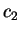

This may be useful if a point charge representation of the density in some region is required. For instance, in the case of a charged cell (e.g. a charged molecule or defect), the Coulomb correction is needed to be subtracted from the energy to avoid the cell-size dependence, this can most easily be done using point charges.
Given the density, a box is chosen with a fine grid in it. Then, point charges are calculated by integrating the density in each parallelepiped of the grid. These charges give a reasonable representation of the density inside the box.
The menu when opens is this:
............MENU for SIMULATE in the BOX .............
......... Change these parameters if necessary:.......
>>>>> Representation of results: through number of electrons
>>>>> Algorithm for the charge integration: <nonconserving>
1. The box center is at: ( 0.00000, 0.00000, 0.00000)
2. Directions of the box sides are along:
1 1.00000, 0.00000, 0.00000)
2 0.00000, 1.00000, 0.00000)
3 0.00000, 0.00000, 1.00000)
3. Lengths of the box sides (in A) are: 1.00000 1.00000 1.00000
>>>> corner of the box is at -0.50000 -0.50000 -0.50000
4. The number of charges in each direction: 1 1 1
>>>> total number of charges = 1
>>>> the cell volume = 1.00000
5. The integration grid in each cell of the box: 10 10 10
6. Scan the box and integrate the charge (reference only):
7. Get point charges using the grid specified
---- G e n e r a l s e t t i n g s -----
An. Coordinates are specified in: <Angstroms>
Co. Show current atomic positions in fractional/Cartesian
--- L e a v e t h e m e n u -------
Q. Return to the previous menu
---> Choose the item and press ENTER:
The box is psecified in options 1-3. The grid inside the box (that will eventuallly give the total number of point charges) is specified in 4. Each charge is positioned in the ``centre of charge'' in each parallellepiped of the grid. To calculate its position and the total charge, a fine grid is used inside each parallellepiped, this is given in 5. To check if the two grids are reasonable, you can integrate the charge in 6. This gives some information that might be useful to decide:
6. Scan the box and integrate the charge (reference only):
>>>> total charge in the box = 8.00000
>>>> total grid points in the box = 216000
When this all done, apply 7 to calculate the point charges. A file charges.sim is written with all charges, and the menu changes into this:
7. Get point charges using the grid specified <= DONE!
>>>> total number of charges = 110
>>>> total charge = 7.98368
>>>> charges between 0.00010 and 3.46360
8. Show point charges
88. Visualise point charges
9. Number of unit cells to test the potential: 1
>>>> the test box defined as : 1x 1x 1
10. Calculate the potential at a set of points
11. Calculate the dipole moment
The view a table with all charges, use 8. A better way to preview charges is to use 88 instead. In this case a file charges.xyz is written in the Xmol format with all charges, in which the species field of each charge is filled with one of the symbols LV1,...,LV11, the larger number correspond to a larger charge. If Xmol is properly configured, then small charges will be shown by smaller balls, while larger ones by larger balls.
The calculated point charges can now be used in simple claculations, for those new options 9-11 can be used. Option 9 gives the box

of cells in which the potential is calculated by using 10. As this is done, the menu option 10 changes into:10. Compare potential with the previous one
This means the following: you can now go and generate a new set of charges, e.g. by choosing a different number of them (a new grid). Then, by using 10, you can find if the potential in the cells around the central one changed significantly. This can be used as a criteria for the proper representation of the charge density by the point charges generated. Finally, the dipole moment of the charge distribution in the box (with respect to the box centre) is calculated in 11.
The settings options here are Co and An with their usual meaning of showing atoms and choosing the format for the coordinates.